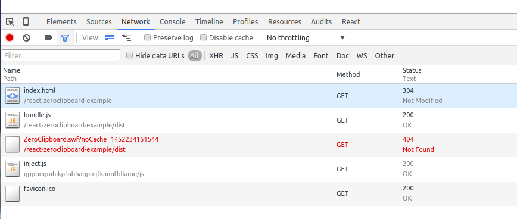

react-zeroclipboard-example
An example showing how to use ZeroClipboard in React application.
Preface
This example assumes you have working experience with these tools or frameworks
- React
- Babel
- Webpack
- ZeroClipboard
The code base is written in ES6, and we will use Babel to compile it to ES5. Webpack comes in handy to make this workflow automated.
Install ZeroClipboard
ZeroClipboard can be easily installed using NPM.
npm install zeroclipboard -DImport ZeroClipboad
After installing it, it can be imported just like importing other modules.
import React from 'react';
import ZeroClipboard from 'zeroclipboard';Create new CopyButton component
We will create a React component using stateless functions, the button is intialized in the ref-callback
const CopyButton = (props)=> {
return <button {...props} ref={elem=>new ZeroClipboard(elem)}>
{props.children}
</button>
}Use the CopyButton component in your app
<CopyButton data-clipboard-text={textToBeCopied}>Click to copy</CopyButton>Solve the SWF dependency
After the package is built and deployed, you will most likely run into this problem.

The SWF file is not found, you can mannually copy this file into your static server and make sure the path is correct. But you need to do this everytime after you do a fresh deployment. Let's solve the problem using webpack.
First, we need to config the ZeroClipboard's swfPath option:
ZeroClipboard.config({
swfPath: require('zeroclipboard/dist/ZeroClipboard.swf')
});
This piece of code looks very strange because a .swf file is required. Unless, the second step, we tell webpack how to deal with
.swf files. We need a loader which will simply copy required dependencies which
ends with .swf to the webpack output path. This loader can be installed by typing npm install file-loader -D. Last, we change the
module.loaders part in webpack.config.js to:
{
test: /\.swf$/,
loader: 'file-loader'
}Close
In this example, we build a React application which integrates ZeroClipboard. The application is written in ES6
and compiled to ES5 using webpack. In order to solve the ZeroClipboard.swf 404 not found problem smartly, we use a
webpack loader called file-loader.